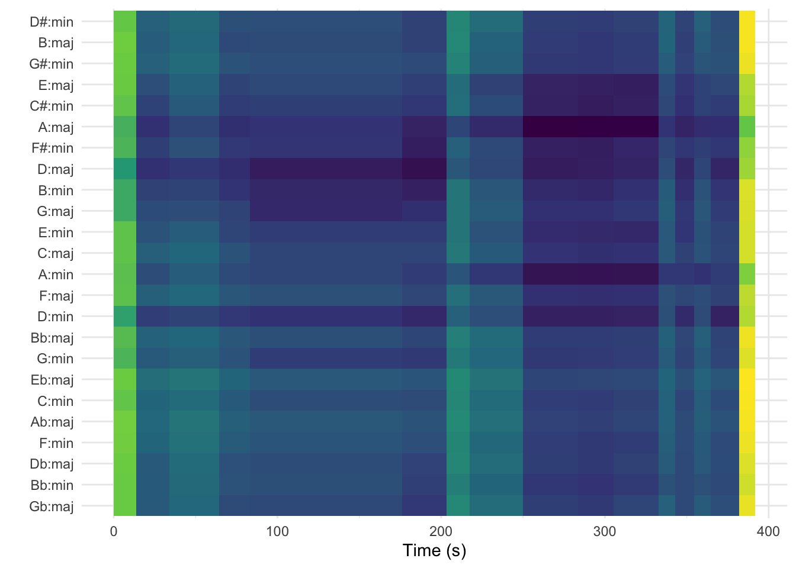
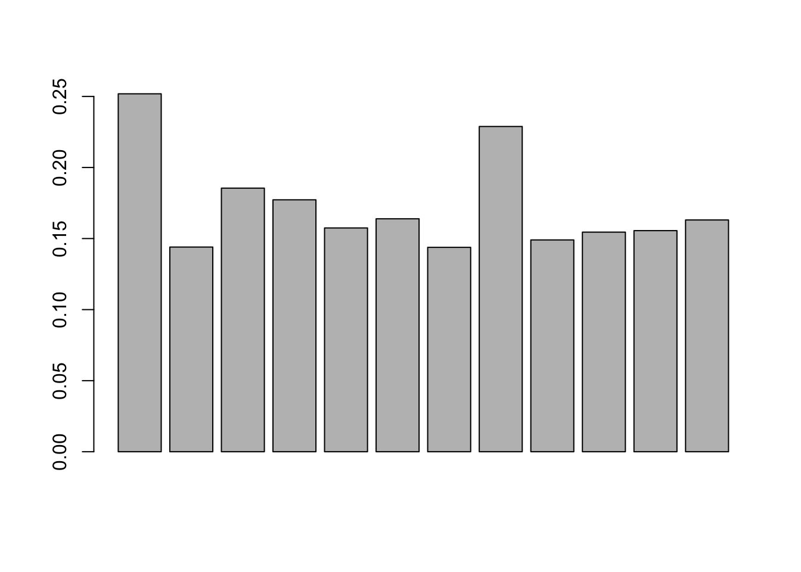

library(spotifyr)
library(compmus)
library(tidyverse)
library(purrr)Week 4: Conceptual Debates (Key-Finding, Entropy, etc.)
Monday
- Let’s talk about key-finding algorithms.
- Explore where they might disagree, and try to figure out why.
- What would it look like to devise your own key-finding algorithm?
Why is Key-Finding Interesting?
When we hear this ringtone, it sounds as though it’s in C, but why?

- It doesn’t begin with C, it begins with G.
- C isn’t the most common note–in fact, it only occurs once before the final bar, and it’s on the “and” of 2 in the third measure (a pretty weak position metrically).
- Is a key just whatever key the piece ends in? If we ended this on A, would it sound like it’s in A minor? It would be the same key signature, and we’d actually have a nice cadential ascent to the final A from the G in the third measure.
So what gives? Why do we hear this as being in C?
Perhaps a follow-up question might simply be: what makes us hear something as being in a key?
A Brief History of Key Finding
Longuet-Higgins and Steedman
This approach used what we might call an exclusionary approach, eliminating different key possibilities as pitch classes were introduced over the course of a musical passage.
For example, with the Nokia theme, the opening G would fit into seven major keys (G, C, D, F, B-flats, A-flat, E-flat;); six of those keys would include the opening two notes; and three of those six would still be possible when presented with the first three notes. By the end of the first measure, however, the only major key that would encompass all four melody notes would be C major. If more than one key was still available however, the algorithm would place more weight on the pitches present at the start of the piece. This worked quite well on pieces that were overtly tonal, but it was less effective for pieces that contained non-diatonic pitches (which is most pieces!)

The Krumhansl-Schmuckler Key-Finding Weightings
As you might guess, the Longuet-Higgins and Steedman would miss a lot of musical instances. For example, pieces that have non-harmonic chords would struggle, as would pieces that had a lot of chromatic ornamentations. Ideally an algorithm would allow for these pitches to occur, but acknowledge that pitches in the key might be a better fit than those outside of the key, and that certain pitches in the key should be more heavily weighted than others.
Carol Krumhansl and Mark Schmuckler (Krumhansl, 1990) would devise an algorithm that tallied up the pitch classes of an excerpt and compared the distribution of these pitch classes to ratings from an earlier probe-tone experiment. (Krumhansl and Kessler, 1982). The weightings can be seen below.
We might think of this as a correlational approach. We tally up all of the pitches in a corpus, and then run a correlation on this key-profile. We run this over all of the keys, and the one that best fits is then labeled as “the key”.
ks_major_key <-
c(6.35,
2.23,
3.48,
2.33,
4.38,
4.09,
2.52,
5.19,
2.39,
3.66,
2.29,
2.88)
ks_minor_key <-
c(6.33,
2.68,
3.52,
5.38,
2.60,
3.53,
2.54,
4.75,
3.98,
2.69,
3.34,
3.17)An interesting distinction here is that of experiment-derived vs. corpus-derived weightings. Should a key-finding algorithm intend to match how we hear key in a controlled lab environment (with basic harmonic progression stimuli), or should they use real music as a starting point? If they use real music, which music?
Bellman-Budge Profiles
Hector Bellman created a key-finding algorithm that used Helen Budge’s dissertation from the 1940s as a starting point. Budge tallied up note occurrences in composers from the classical music canon, looking at the tonal makeup of a large collection of pieces. Bellman then used these frequencies as the starting point for his own key-finding algorithm.
major <- c(16.80,
0.86,
12.95,
1.41,
13.49,
11.93,
1.25,
20.28,
1.80,
8.04,
0.62,
10.57)
minor <- c(18.16,
0.69,
12.99,
13.34,
1.07,
11.15,
1.38,
21.07,
7.49,
1.53,
0.92,
10.21)The Temperley (Kostka-Payne Corpus)
David Temperley (2001) also employed Western classical music as a starting point for his early key-finding work (not to be confused with his more dynamic Bayesian-informed later work). He used examples from a commonly used music theory textbook (Stefan Kostka and Dorothy Payne’s Tonal Harmony).
major <- c(0.748,
0.060,
0.488,
0.082,
0.670,
0.460,
0.096,
0.715,
0.104,
0.366,
0.057,
0.400)
minor <- c(0.712,
0.084,
0.474,
0.618,
0.049,
0.460,
0.105,
0.747,
0.404,
0.067,
0.133,
0.330)Aarden’s Folk Song Key-Profiles
Bret Aarden (2003) argued that folk music would be a better fit than those generated from classical music. He used the Essen Folksong collection (consisting of thousands of folksongs throughout Europe, although with an uneven balance toward German folksong), to come up with the weightings below.
major <- c(17.7661,
0.145624,
14.9265,
0.160186,
19.8049,
11.3587,
0.291248,
22.062,
0.145624,
8.15494,
0.232998,
4.95122)
minor <- c(18.2648,
0.737619,
14.0499,
16.8599,
0.702494,
14.4362,
0.702494,
18.6161,
4.56621,
1.93186,
7.37619,
1.75623)Sapp’s Simple Weightings
Craig Sapp argued that we probably didn’t even need to get frequencies from corpora or experiments. If we just assume that the tonic and the dominant (scale degrees 1 and 5) are the most important, and the other pitches in the key are less important, but more important than those not in the key, then we have a pretty simple weighting system (that works quite well!).
major <- c(2, 0, 1, 0, 1, 1, 0, 2, 0, 1, 0, 1)
minor <- c(2, 0, 1, 1, 0, 1, 0, 2, 1, 0, 0.5, 0.5)Albrecht and Shanahan (2013)
Josh Albrecht and I tried our hands at this problem, and picked a set of classical works from the Humdrum corpus, looking at only the first and last eight measures of each. The numbers are below.
major <- c(0.238,
0.006,
0.111,
0.006,
0.137,
0.094,
0.016,
0.214,
0.009,
0.080,
0.008,
0.081)
minor <- c(0.220,
0.006,
0.104,
0.123,
0.019,
0.103,
0.012,
0.214,
0.062,
0.022,
0.061,
0.052)We also tried a Euclidean distance approach, rather than a correlational approach.
We tried to explain it as follows:
In a two-dimensional space, if there were 70% of pitch X and 30% pitch Y, the Cartesian location of the point representing this pitch-class distribution would be at X 1⁄4 0.7 and Y 1⁄4 0.3. In this case, we are examining the distribution of 12 pitch classes, resulting in a 12-dimensional Cartesian space. The pitch-class distribution of each piece is represented by a point in that 12-dimensional space. The distance is then measured between this point and the 24 points representing the 12 major and 12 minor key pitch-class distributions, and the key separated by the shortest distance is taken to be the key of the work.
Below is a table comparing how well this did to the others.

How do they each perform on a corpus of classical music?
They each perform a bit differently on different types of tasks.

Analyzing Key with Music21
music21 has a number of built-in key-finding algorithms, and it’s nice to be able to compare keys in specific pieces. You can start to see the differences between them, and their respective biases.
This code will grab all of the files in a folder (here a number of Yugoslav folk songs):
import glob
###change this path to be your own!
def filebrowser(ext="/Users/danielshanahan/gitcloud/Teaching/corpus-studies-2024/data/Essen/Jugoslav/*.krn"):
"Returns files with an extension"
return [f for f in glob.glob(ext)]
file_list = filebrowser()And here I will grab the key of each one and print it out using different algorithms:
from music21 import *
for kern_file in file_list:
melody = converter.parse(kern_file)
krum = analysis.discrete.KrumhanslKessler(melody)
krum_key = krum.getSolution(melody)
aarden = analysis.discrete.AardenEssen(melody)
aarden_key = aarden.getSolution(melody)
bellman = analysis.discrete.BellmanBudge(melody)
bellman_key = bellman.getSolution(melody)
temperley = analysis.discrete.TemperleyKostkaPayne(melody)
temperley_key = temperley.getSolution(melody)
sapp = analysis.discrete.SimpleWeights(melody)
sapp_key = sapp.getSolution(melody)And then we can call all of our variables like so:
print(f'File name: {kern_file}\nKrumhansl-Kessler: {krum_key}\nAarden Essen: {aarden_key}\nBellman-Budge: {bellman_key}\nTemperley-Kostka-Payne: {temperley_key}\nSapp Simple-Weightings: {sapp_key}\n')This returns the following results (with a very long list):
File name: /Users/danielshanahan/gitcloud/Teaching/corpus-studies-2024/data/Essen/Jugoslav/jugos039.krn
Krumhansl-Kessler: b minor
Aarden Essen: G major
Bellman-Budge: G major
Temperley-Kostka-Payne: G major
Sapp Simple-Weightings: e minor
File name: /Users/danielshanahan/gitcloud/Teaching/corpus-studies-2024/data/Essen/Jugoslav/jugos005.krn
Krumhansl-Kessler: G major
Aarden Essen: G major
Bellman-Budge: G major
Temperley-Kostka-Payne: G major
Sapp Simple-Weightings: D major
File name: /Users/danielshanahan/gitcloud/Teaching/corpus-studies-2024/data/Essen/Jugoslav/jugos011.krn
Krumhansl-Kessler: D major
Aarden Essen: D major
Bellman-Budge: D major
Temperley-Kostka-Payne: D major
Sapp Simple-Weightings: D major
File name: /Users/danielshanahan/gitcloud/Teaching/corpus-studies-2024/data/Essen/Jugoslav/jugos010.krn
Krumhansl-Kessler: A- major
Aarden Essen: A- major
Bellman-Budge: A- major
Temperley-Kostka-Payne: A- major
Sapp Simple-Weightings: C# major
File name: /Users/danielshanahan/gitcloud/Teaching/corpus-studies-2024/data/Essen/Jugoslav/jugos004.krn
Krumhansl-Kessler: F major
Aarden Essen: g minor
Bellman-Budge: F major
Temperley-Kostka-Payne: F major
Sapp Simple-Weightings: B- major
File name: /Users/danielshanahan/gitcloud/Teaching/corpus-studies-2024/data/Essen/Jugoslav/jugos038.krn
Krumhansl-Kessler: G major
Aarden Essen: e minor
Bellman-Budge: e minor
Temperley-Kostka-Payne: G major
Sapp Simple-Weightings: G major
File name: /Users/danielshanahan/gitcloud/Teaching/corpus-studies-2024/data/Essen/Jugoslav/jugos012.krn
Krumhansl-Kessler: G major
Aarden Essen: G major
Bellman-Budge: G major
Temperley-Kostka-Payne: G major
Sapp Simple-Weightings: C major
File name: /Users/danielshanahan/gitcloud/Teaching/corpus-studies-2024/data/Essen/Jugoslav/jugos006.krn
Krumhansl-Kessler: C major
Aarden Essen: C major
Bellman-Budge: C major
Temperley-Kostka-Payne: C major
Sapp Simple-Weightings: C major
File name: /Users/danielshanahan/gitcloud/Teaching/corpus-studies-2024/data/Essen/Jugoslav/jugos007.krn
Krumhansl-Kessler: F major
Aarden Essen: B- major
Bellman-Budge: B- major
Temperley-Kostka-Payne: B- major
Sapp Simple-Weightings: F major
File name: /Users/danielshanahan/gitcloud/Teaching/corpus-studies-2024/data/Essen/Jugoslav/jugos013.krn
Krumhansl-Kessler: D major
Aarden Essen: G major
Bellman-Budge: G major
Temperley-Kostka-Payne: G major
Sapp Simple-Weightings: G major
File name: /Users/danielshanahan/gitcloud/Teaching/corpus-studies-2024/data/Essen/Jugoslav/jugos017.krn
Krumhansl-Kessler: A- major
Aarden Essen: f minor
Bellman-Budge: f minor
Temperley-Kostka-Payne: A- major
Sapp Simple-Weightings: A- major
File name: /Users/danielshanahan/gitcloud/Teaching/corpus-studies-2024/data/Essen/Jugoslav/jugos003.krn
Krumhansl-Kessler: B major
Aarden Essen: E major
Bellman-Budge: E major
Temperley-Kostka-Payne: E major
Sapp Simple-Weightings: B major
File name: /Users/danielshanahan/gitcloud/Teaching/corpus-studies-2024/data/Essen/Jugoslav/jugos002.krn
Krumhansl-Kessler: F major
Aarden Essen: F major
Bellman-Budge: B- major
Temperley-Kostka-Payne: B- major
Sapp Simple-Weightings: B- major
File name: /Users/danielshanahan/gitcloud/Teaching/corpus-studies-2024/data/Essen/Jugoslav/jugos016.krn
Krumhansl-Kessler: D major
Aarden Essen: G major
Bellman-Budge: G major
Temperley-Kostka-Payne: G major
Sapp Simple-Weightings: D major
File name: /Users/danielshanahan/gitcloud/Teaching/corpus-studies-2024/data/Essen/Jugoslav/jugos014.krn
Krumhansl-Kessler: G major
Aarden Essen: G major
Bellman-Budge: G major
Temperley-Kostka-Payne: G major
Sapp Simple-Weightings: G major
File name: /Users/danielshanahan/gitcloud/Teaching/corpus-studies-2024/data/Essen/Jugoslav/jugos028.krn
Krumhansl-Kessler: a minor
Aarden Essen: g minor
Bellman-Budge: F major
Temperley-Kostka-Payne: F major
Sapp Simple-Weightings: d minor
File name: /Users/danielshanahan/gitcloud/Teaching/corpus-studies-2024/data/Essen/Jugoslav/jugos029.krn
Krumhansl-Kessler: C major
Aarden Essen: C major
Bellman-Budge: C major
Temperley-Kostka-Payne: C major
Sapp Simple-Weightings: C major
File name: /Users/danielshanahan/gitcloud/Teaching/corpus-studies-2024/data/Essen/Jugoslav/jugos015.krn
Krumhansl-Kessler: G major
Aarden Essen: G major
Bellman-Budge: G major
Temperley-Kostka-Payne: G major
Sapp Simple-Weightings: G major
File name: /Users/danielshanahan/gitcloud/Teaching/corpus-studies-2024/data/Essen/Jugoslav/jugos001.krn
Krumhansl-Kessler: b minor
Aarden Essen: G major
Bellman-Budge: G major
Temperley-Kostka-Payne: G major
Sapp Simple-Weightings: e minor
File name: /Users/danielshanahan/gitcloud/Teaching/corpus-studies-2024/data/Essen/Jugoslav/jugos112.krn
Krumhansl-Kessler: b minor
Aarden Essen: G major
Bellman-Budge: G major
Temperley-Kostka-Payne: G major
Sapp Simple-Weightings: e minor
File name: /Users/danielshanahan/gitcloud/Teaching/corpus-studies-2024/data/Essen/Jugoslav/jugos106.krn
Krumhansl-Kessler: F major
Aarden Essen: F major
Bellman-Budge: B- major
Temperley-Kostka-Payne: F major
Sapp Simple-Weightings: B- major
File name: /Users/danielshanahan/gitcloud/Teaching/corpus-studies-2024/data/Essen/Jugoslav/jugos066.krn
Krumhansl-Kessler: g minor
Aarden Essen: g minor
Bellman-Budge: g minor
Temperley-Kostka-Payne: g minor
Sapp Simple-Weightings: g minor
File name: /Users/danielshanahan/gitcloud/Teaching/corpus-studies-2024/data/Essen/Jugoslav/jugos072.krn
Krumhansl-Kessler: a minor
Aarden Essen: F major
Bellman-Budge: F major
Temperley-Kostka-Payne: F major
Sapp Simple-Weightings: F major
File name: /Users/danielshanahan/gitcloud/Teaching/corpus-studies-2024/data/Essen/Jugoslav/jugos099.krn
Krumhansl-Kessler: G major
Aarden Essen: a minor
Bellman-Budge: G major
Temperley-Kostka-Payne: G major
Sapp Simple-Weightings: G major
File name: /Users/danielshanahan/gitcloud/Teaching/corpus-studies-2024/data/Essen/Jugoslav/jugos098.krn
Krumhansl-Kessler: b minor
Aarden Essen: G major
Bellman-Budge: G major
Temperley-Kostka-Payne: G major
Sapp Simple-Weightings: e minor
File name: /Users/danielshanahan/gitcloud/Teaching/corpus-studies-2024/data/Essen/Jugoslav/jugos073.krn
Krumhansl-Kessler: a minor
Aarden Essen: F major
Bellman-Budge: F major
Temperley-Kostka-Payne: F major
Sapp Simple-Weightings: d minor
File name: /Users/danielshanahan/gitcloud/Teaching/corpus-studies-2024/data/Essen/Jugoslav/jugos067.krn
Krumhansl-Kessler: D major
Aarden Essen: e minor
Bellman-Budge: G major
Temperley-Kostka-Payne: G major
Sapp Simple-Weightings: G majorThis code will give us the key, and the confidence of each key, with different algorithms:
import pandas as pd
from music21 import *
krum_kess = []
aarden_essen = []
temperley_kp = []
bellman_budge = []
sapp_weighted = []
titles = []
for file in file_list:
titles.append(file.split("/")[-1])
melody = converter.parse(file)
krum = analysis.discrete.KrumhanslKessler(melody)
krum_key = krum.getSolution(melody)
coef_krum = round(krum_key.correlationCoefficient, 3)
krum_kess.append(f'{krum_key} ({coef_krum})')
aarden = analysis.discrete.AardenEssen(melody)
coef_aarden = round(aarden_key.correlationCoefficient, 3)
aarden_key = aarden.getSolution(melody)
aarden_essen.append(f'{aarden_key} ({coef_aarden})')
bellman = analysis.discrete.BellmanBudge(melody)
bellman_key = bellman.getSolution(melody)
coef_bellman = round(bellman_key.correlationCoefficient, 3)
bellman_budge.append(f'{bellman_key} ({coef_bellman})')
sapp = analysis.discrete.SimpleWeights(melody)
sapp_key = sapp.getSolution(melody)
coef_sapp = round(sapp_key.correlationCoefficient, 3)
sapp_weighted.append(f'{sapp_key} ({coef_sapp})')
temperley = analysis.discrete.TemperleyKostkaPayne(melody)
temperley_key = temperley.getSolution(melody)
coef_temperley = round(temperley_key.correlationCoefficient, 3)
temperley_kp.append(f'{temperley_key} ({coef_temperley})')
pd.set_option('max_rows', 371)
df = pd.DataFrame(list(zip(titles, krum_kess, aarden_essen, bellman_budge, sapp_weighted, temperley_kp)), columns= ['Chorale','Krumhansl-Kessler', 'Aarden-Essen', 'Bellman-Budge', 'Sapp Weighted', 'Temperley-KP'])
dfHere is a table of each key decided by each algorithm:
| Chorale | Krumhansl-Kessler | Aarden-Essen | Bellman-Budge | Sapp Weighted | Temperley-KP | |
|---|---|---|---|---|---|---|
| 0 | jugos039.krn | b minor (0.64) | G major (0.848) | G major (0.653) | e minor (0.663) | G major (0.693) |
| 1 | jugos005.krn | G major (0.765) | G major (0.793) | G major (0.79) | D major (0.711) | G major (0.827) |
| 2 | jugos011.krn | D major (0.839) | D major (0.887) | D major (0.757) | D major (0.753) | D major (0.839) |
| 3 | jugos010.krn | A- major (0.762) | A- major (0.83) | A- major (0.773) | C# major (0.692) | A- major (0.838) |
| 4 | jugos004.krn | F major (0.618) | g minor (0.886) | F major (0.727) | B- major (0.686) | F major (0.715) |
| 5 | jugos038.krn | G major (0.598) | e minor (0.827) | e minor (0.636) | G major (0.587) | G major (0.688) |
| 6 | jugos012.krn | G major (0.858) | G major (0.727) | G major (0.688) | C major (0.716) | G major (0.789) |
| 7 | jugos006.krn | C major (0.705) | C major (0.753) | C major (0.594) | C major (0.582) | C major (0.696) |
| 8 | jugos007.krn | F major (0.768) | B- major (0.685) | B- major (0.787) | F major (0.801) | B- major (0.82) |
| 9 | jugos013.krn | D major (0.822) | G major (0.882) | G major (0.859) | G major (0.796) | G major (0.826) |
| 10 | jugos017.krn | A- major (0.696) | f minor (0.906) | f minor (0.586) | A- major (0.575) | A- major (0.672) |
| 11 | jugos003.krn | B major (0.815) | E major (0.683) | E major (0.793) | B major (0.817) | E major (0.781) |
| 12 | jugos002.krn | F major (0.837) | F major (0.858) | B- major (0.828) | B- major (0.884) | B- major (0.806) |
| 13 | jugos016.krn | D major (0.829) | G major (0.77) | G major (0.843) | D major (0.77) | G major (0.851) |
| 14 | jugos014.krn | G major (0.797) | G major (0.907) | G major (0.784) | G major (0.708) | G major (0.857) |
| 15 | jugos028.krn | a minor (0.547) | g minor (0.902) | F major (0.667) | d minor (0.547) | F major (0.659) |
| 16 | jugos029.krn | C major (0.64) | C major (0.787) | C major (0.616) | C major (0.577) | C major (0.682) |
| 17 | jugos015.krn | G major (0.744) | G major (0.675) | G major (0.611) | G major (0.616) | G major (0.709) |
| 18 | jugos001.krn | b minor (0.733) | G major (0.688) | G major (0.703) | e minor (0.725) | G major (0.809) |
| 19 | jugos112.krn | b minor (0.66) | G major (0.84) | G major (0.511) | e minor (0.617) | G major (0.576) |
| 20 | jugos106.krn | F major (0.872) | F major (0.649) | B- major (0.777) | B- major (0.843) | F major (0.795) |
| 21 | jugos066.krn | g minor (0.771) | g minor (0.763) | g minor (0.745) | g minor (0.713) | g minor (0.734) |
| 22 | jugos072.krn | a minor (0.818) | F major (0.734) | F major (0.702) | F major (0.566) | F major (0.692) |
| 23 | jugos099.krn | G major (0.662) | a minor (0.773) | G major (0.767) | G major (0.719) | G major (0.752) |
| 24 | jugos098.krn | b minor (0.697) | G major (0.847) | G major (0.499) | e minor (0.568) | G major (0.568) |
| 25 | jugos073.krn | a minor (0.677) | F major (0.642) | F major (0.619) | d minor (0.578) | F major (0.648) |
| 26 | jugos067.krn | D major (0.619) | e minor (0.746) | G major (0.663) | G major (0.628) | G major (0.694) |
| 27 | jugos107.krn | G major (0.696) | G major (0.718) | G major (0.82) | G major (0.708) | G major (0.833) |
| 28 | jugos113.krn | G major (0.788) | G major (0.932) | G major (0.662) | C major (0.699) | G major (0.737) |
| 29 | jugos105.krn | G major (0.782) | G major (0.678) | G major (0.854) | G major (0.745) | G major (0.866) |
| 30 | jugos111.krn | G major (0.765) | G major (0.943) | G major (0.684) | C major (0.719) | G major (0.75) |
| 31 | jugos059.krn | F major (0.81) | F major (0.723) | F major (0.823) | F major (0.729) | F major (0.877) |
| 32 | jugos071.krn | F major (0.771) | F major (0.929) | F major (0.888) | F major (0.82) | F major (0.832) |
| 33 | jugos065.krn | F major (0.627) | F major (0.908) | F major (0.577) | B- major (0.631) | F major (0.662) |
| 34 | jugos064.krn | g minor (0.797) | g minor (0.668) | g minor (0.836) | g minor (0.775) | g minor (0.822) |
| 35 | jugos070.krn | F major (0.84) | F major (0.824) | F major (0.832) | F major (0.822) | F major (0.867) |
| 36 | jugos058.krn | F major (0.819) | F major (0.901) | F major (0.777) | F major (0.709) | F major (0.856) |
| 37 | jugos110.krn | C major (0.756) | C major (0.89) | C major (0.713) | C major (0.791) | C major (0.735) |
| 38 | jugos104.krn | G major (0.641) | e minor (0.597) | g minor (0.492) | G major (0.568) | G major (0.509) |
| 39 | jugos100.krn | g minor (0.691) | C major (0.476) | C major (0.626) | c minor (0.652) | c minor (0.558) |
| 40 | jugos114.krn | C major (0.861) | F major (0.576) | F major (0.798) | C major (0.804) | F major (0.741) |
| 41 | jugos074.krn | G major (0.636) | G major (0.78) | G major (0.647) | G major (0.651) | G major (0.651) |
| 42 | jugos060.krn | g minor (0.627) | d minor (0.573) | F major (0.621) | B- major (0.586) | F major (0.664) |
| 43 | jugos048.krn | F major (0.696) | F major (0.687) | F major (0.647) | F major (0.589) | F major (0.737) |
| 44 | jugos049.krn | A major (0.821) | A major (0.754) | A major (0.707) | A major (0.74) | A major (0.738) |
| 45 | jugos061.krn | C major (0.684) | C major (0.716) | F major (0.579) | F major (0.68) | C major (0.625) |
| 46 | jugos075.krn | G major (0.896) | G major (0.54) | G major (0.814) | G major (0.837) | G major (0.829) |
| 47 | jugos115.krn | G major (0.898) | G major (0.835) | G major (0.947) | G major (0.939) | G major (0.948) |
| 48 | jugos101.krn | G major (0.819) | G major (0.958) | G major (0.777) | G major (0.709) | G major (0.856) |
| 49 | jugos117.krn | C major (0.85) | C major (0.89) | C major (0.784) | a minor (0.765) | C major (0.893) |
| 50 | jugos103.krn | G major (0.676) | G major (0.862) | G major (0.688) | D major (0.62) | G major (0.737) |
| 51 | jugos063.krn | F major (0.572) | d minor (0.775) | F major (0.561) | B- major (0.524) | F major (0.635) |
| 52 | jugos077.krn | a minor (0.622) | a minor (0.648) | G major (0.64) | d minor (0.533) | a minor (0.581) |
| 53 | jugos088.krn | a minor (0.622) | D major (0.689) | D major (0.545) | D major (0.564) | A major (0.439) |
| 54 | jugos089.krn | a minor (0.594) | G major (0.506) | G major (0.544) | C major (0.583) | G major (0.619) |
| 55 | jugos076.krn | C major (0.828) | C major (0.659) | C major (0.733) | C major (0.725) | C major (0.809) |
| 56 | jugos062.krn | G major (0.603) | e minor (0.812) | G major (0.594) | C major (0.597) | G major (0.622) |
| 57 | jugos102.krn | a minor (0.495) | G major (0.57) | e minor (0.577) | e minor (0.54) | G major (0.602) |
| 58 | jugos116.krn | G major (0.676) | G major (0.651) | G major (0.749) | e minor (0.666) | G major (0.774) |
| 59 | jugos047.krn | G major (0.835) | C major (0.834) | C major (0.861) | C major (0.834) | C major (0.861) |
| 60 | jugos053.krn | G major (0.903) | G major (0.904) | G major (0.786) | G major (0.777) | G major (0.859) |
| 61 | jugos084.krn | D major (0.65) | e minor (0.859) | G major (0.685) | D major (0.665) | G major (0.708) |
| 62 | jugos090.krn | a minor (0.925) | a minor (0.695) | a minor (0.79) | a minor (0.774) | a minor (0.838) |
| 63 | jugos091.krn | E- major (0.711) | E- major (0.868) | E- major (0.666) | E- major (0.632) | E- major (0.726) |
| 64 | jugos085.krn | G major (0.639) | G major (0.739) | G major (0.772) | G major (0.665) | G major (0.805) |
| 65 | jugos052.krn | G major (0.769) | G major (0.791) | G major (0.701) | e minor (0.708) | G major (0.816) |
| 66 | jugos046.krn | G major (0.872) | G major (0.839) | G major (0.769) | G major (0.772) | G major (0.835) |
| 67 | jugos118.krn | b minor (0.878) | G major (0.831) | G major (0.801) | G major (0.725) | G major (0.86) |
| 68 | jugos078.krn | g minor (0.705) | g minor (0.907) | F major (0.565) | B- major (0.567) | g minor (0.607) |
| 69 | jugos050.krn | C major (0.82) | F major (0.721) | F major (0.951) | F major (0.877) | F major (0.894) |
| 70 | jugos044.krn | G major (0.853) | G major (0.93) | G major (0.86) | G major (0.825) | G major (0.865) |
| 71 | jugos093.krn | G major (0.729) | G major (0.889) | G major (0.657) | G major (0.644) | G major (0.712) |
| 72 | jugos087.krn | a minor (0.585) | G major (0.709) | G major (0.55) | C major (0.587) | G major (0.611) |
| 73 | jugos086.krn | b- minor (0.794) | b- minor (0.632) | b- minor (0.505) | b- minor (0.583) | b- minor (0.554) |
| 74 | jugos092.krn | G major (0.621) | G major (0.6) | G major (0.686) | D major (0.647) | G major (0.727) |
| 75 | jugos045.krn | G major (0.546) | e minor (0.791) | e minor (0.652) | e minor (0.56) | e minor (0.687) |
| 76 | jugos051.krn | e minor (0.565) | b minor (0.74) | D major (0.566) | G major (0.579) | D major (0.589) |
| 77 | jugos079.krn | G major (0.837) | G major (0.555) | G major (0.903) | G major (0.832) | G major (0.924) |
| 78 | jugos119.krn | G major (0.778) | G major (0.933) | G major (0.778) | G major (0.71) | G major (0.858) |
| 79 | jugos109.krn | G major (0.637) | G major (0.883) | G major (0.668) | G major (0.583) | G major (0.748) |
| 80 | jugos055.krn | G major (0.868) | G major (0.756) | G major (0.816) | G major (0.842) | G major (0.796) |
| 81 | jugos041.krn | G major (0.482) | e minor (0.814) | G major (0.55) | G major (0.547) | G major (0.546) |
| 82 | jugos069.krn | a minor (0.686) | G major (0.532) | G major (0.719) | C major (0.607) | G major (0.716) |
| 83 | jugos096.krn | G major (0.825) | G major (0.805) | G major (0.869) | G major (0.815) | G major (0.865) |
| 84 | jugos082.krn | G major (0.705) | G major (0.904) | G major (0.733) | C major (0.609) | G major (0.806) |
| 85 | jugos083.krn | D major (0.855) | G major (0.864) | G major (0.864) | D major (0.8) | G major (0.813) |
| 86 | jugos097.krn | G major (0.617) | G major (0.885) | G major (0.637) | D major (0.631) | G major (0.638) |
| 87 | jugos068.krn | G major (0.829) | C major (0.666) | C major (0.843) | C major (0.77) | C major (0.851) |
| 88 | jugos040.krn | b minor (0.753) | G major (0.907) | G major (0.68) | D major (0.606) | G major (0.673) |
| 89 | jugos054.krn | G major (0.838) | G major (0.791) | G major (0.824) | G major (0.765) | G major (0.869) |
| 90 | jugos108.krn | a minor (0.504) | d minor (0.905) | d minor (0.585) | d minor (0.553) | d minor (0.566) |
| 91 | jugos042.krn | G major (0.66) | G major (0.597) | G major (0.628) | C major (0.622) | G major (0.733) |
| 92 | jugos056.krn | G major (0.874) | G major (0.758) | G major (0.854) | G major (0.816) | G major (0.874) |
| 93 | jugos081.krn | G major (0.79) | G major (0.916) | G major (0.762) | G major (0.682) | G major (0.848) |
| 94 | jugos095.krn | G major (0.792) | G major (0.886) | G major (0.771) | G major (0.728) | G major (0.836) |
| 95 | jugos094.krn | g minor (0.771) | g minor (0.796) | g minor (0.745) | g minor (0.713) | g minor (0.734) |
| 96 | jugos080.krn | G major (0.891) | G major (0.734) | C major (0.692) | G major (0.738) | G major (0.798) |
| 97 | jugos057.krn | F major (0.861) | F major (0.754) | F major (0.836) | F major (0.776) | F major (0.89) |
| 98 | jugos043.krn | b minor (0.735) | G major (0.932) | G major (0.823) | D major (0.732) | G major (0.855) |
| 99 | jugos018.krn | b- minor (0.807) | b- minor (0.934) | b- minor (0.551) | b- minor (0.588) | b- minor (0.587) |
| 100 | jugos024.krn | G major (0.824) | G major (0.578) | G major (0.873) | G major (0.808) | G major (0.895) |
| 101 | jugos030.krn | G major (0.793) | G major (0.968) | G major (0.837) | G major (0.85) | G major (0.848) |
| 102 | jugos031.krn | C major (0.797) | F major (0.732) | F major (0.823) | C major (0.776) | F major (0.804) |
| 103 | jugos025.krn | C major (0.908) | C major (0.89) | C major (0.831) | C major (0.811) | C major (0.894) |
| 104 | jugos019.krn | a minor (0.611) | f# minor (0.879) | a minor (0.53) | a minor (0.544) | a minor (0.504) |
| 105 | jugos033.krn | D major (0.664) | G major (0.488) | G major (0.667) | G major (0.635) | G major (0.602) |
| 106 | jugos027.krn | g minor (0.686) | F major (0.685) | F major (0.51) | B- major (0.543) | F major (0.549) |
| 107 | jugos026.krn | G major (0.895) | G major (0.592) | G major (0.805) | G major (0.791) | G major (0.87) |
| 108 | jugos032.krn | G major (0.936) | G major (0.836) | G major (0.878) | G major (0.942) | G major (0.913) |
| 109 | jugos036.krn | b minor (0.715) | G major (0.853) | G major (0.81) | G major (0.726) | G major (0.787) |
| 110 | jugos022.krn | D major (0.768) | D major (0.88) | D major (0.819) | G major (0.781) | D major (0.826) |
| 111 | jugos023.krn | C major (0.601) | F major (0.883) | F major (0.704) | C major (0.639) | F major (0.714) |
| 112 | jugos037.krn | G major (0.767) | G major (0.822) | G major (0.774) | G major (0.724) | G major (0.798) |
| 113 | jugos021.krn | D major (0.688) | e minor (0.806) | D major (0.739) | G major (0.731) | G major (0.762) |
| 114 | jugos035.krn | G major (0.881) | G major (0.869) | G major (0.952) | G major (0.951) | G major (0.938) |
| 115 | jugos009.krn | C major (0.762) | a minor (0.927) | C major (0.752) | C major (0.746) | C major (0.814) |
| 116 | jugos008.krn | G major (0.896) | G major (0.77) | G major (0.806) | G major (0.806) | G major (0.872) |
| 117 | jugos034.krn | G major (0.897) | G major (0.851) | G major (0.779) | G major (0.756) | G major (0.866) |
| 118 | jugos020.krn | G major (0.888) | G major (0.861) | G major (0.86) | G major (0.892) | G major (0.897) |
Windows
Here, we can see the various windows of keys in a song:
for kern_file in file_list:
krum = analysis.discrete.KrumhanslKessler(kern_file)
krum_key = krum.getSolution(kern_file)
krum_key.correlationCoefficient
p = graph.plot.WindowedKey(kern_file.parts[0])
p.run()One of these would look like this:

Audio Data
It might be worth having a look at some audio data now. For this, we will use the Spotify API and Ashley Burgoyne’s compmus package, and the spotifyr toolkit.
Spotify
In order to explore the Spotify API, you will need a client ID and a client “secret”. You can find those here.
corrplot 0.92 loadedcircshift <- function(v, n) {
if (n == 0) v else c(tail(v, n), head(v, -n))
}
#
# # ### uses the Krumhansl Schmuckler Profiles
major_key <- c(6.35, 2.23, 3.48, 2.33, 4.38, 4.09, 2.52, 5.19, 2.39, 3.66, 2.29, 2.88)
minor_key <- c(6.33, 2.68, 3.52, 5.38, 2.60, 3.53, 2.54, 4.75, 3.98, 2.69, 3.34, 3.17)
##sapp's simple weightings
# major_key <- c(2, 0, 1, 0, 1, 1, 0, 2, 0, 1, 0, 1)
#
# minor_key <- c(2, 0, 1, 1, 0, 1, 0, 2, 1, 0, 0.5, 0.5)
key_templates <-
tribble(
~name, ~template,
"Gb:maj", circshift(major_key, 6),
"Bb:min", circshift(minor_key, 10),
"Db:maj", circshift(major_key, 1),
"F:min", circshift(minor_key, 5),
"Ab:maj", circshift(major_key, 8),
"C:min", circshift(minor_key, 0),
"Eb:maj", circshift(major_key, 3),
"G:min", circshift(minor_key, 7),
"Bb:maj", circshift(major_key, 10),
"D:min", circshift(minor_key, 2),
"F:maj", circshift(major_key, 5),
"A:min", circshift(minor_key, 9),
"C:maj", circshift(major_key, 0),
"E:min", circshift(minor_key, 4),
"G:maj", circshift(major_key, 7),
"B:min", circshift(minor_key, 11),
"D:maj", circshift(major_key, 2),
"F#:min", circshift(minor_key, 6),
"A:maj", circshift(major_key, 9),
"C#:min", circshift(minor_key, 1),
"E:maj", circshift(major_key, 4),
"G#:min", circshift(minor_key, 8),
"B:maj", circshift(major_key, 11),
"D#:min", circshift(minor_key, 3)
)Let’s look at Lucy Dacus’s “Night Shift”.
This grabs the track and does all the magic:
night_shift <-
get_tidy_audio_analysis("1yYlpGuBiRRf33e1gY61bN") |>
compmus_align(sections, segments) |>
select(sections) |>
unnest(sections) |>
mutate(
pitches =
map(segments,
compmus_summarise, pitches,
method = "mean", norm = "manhattan"
)
)And this is just a plotting function:
night_shift |>
compmus_match_pitch_template(
key_templates, # Change to chord_templates if descired
method = "euclidean", # Try different distance metrics
norm = "manhattan" # Try different norms
) |>
ggplot(
aes(x = start + duration / 2, width = duration, y = name, fill = d)
) +
geom_tile() +
scale_fill_viridis_c(guide = "none") +
theme_minimal() +
labs(x = "Time (s)", y = "")
night_shift <-
get_tidy_audio_analysis("1yYlpGuBiRRf33e1gY61bN") |>
compmus_align(sections, segments) |>
select(sections) |>
unnest(sections) |>
mutate(
pitches =
map(segments,
compmus_summarise, pitches,
method = "mean", norm = "manhattan"
)
)Let’s do some exercises:
- Visualize a song with all of these weightings.
- How do the algorithms differ?
- Can you write a function that would call each weighting as an argument? What would that look like?
Making our own
There are many different ways of calculating key, and what constitutes “tonality” can change quite a bit depending on how you approach it. If using a set of pitches from a corpus to define a key-profile, the question becomes “which corpus?”
Today, we are going to look at what it means to generate a key-profile for more appropriate key-finding algorithms. We are going to break the class into a few separate sections:
- Looking at getting a broad key-profile from a playlist.
- Breaking that into a major and minor key-profile (and discussing the issues and implications with this)
- Working on an in-class exercise that generates a key-profile from a corpus and then looks at
What’s the Key-Profile for “Indie-Pop”
The basic code for getting a key-profile from a playlist is below. The process is as follows:
- Get the audio features from a playlist, and add the audio analysis onto the datafame.
- We then create a “segments” column by using a map function from the
tidyverse. Map functions basically apply a function over each element in a list. Here, we are saying “apply thecompmus_c_transposefunction to the key and segments lists from theadd_audio_analysisfunction.”- What does the
compmus_c_transposefunction do? It takes all of the chroma vectors and transposes them to the key of C, so that we can construct a single set of weightings from pieces in different keys.
- What does the
- We then only grab this transposed segments column and turn it into a more readable list with the
unnestfunction.- We then grab the start, duration, and pitches info.
- We then create a “pitches” column, and normalize these raw pitch counts. There are a few ways to do this, and there are different options for this.
- We then used the
compmus_gather_chromafunction to take all of those chroma vectors and turn them into a list. - We then use the
group_byandsummarisefunctions fromtidyverse, and get the mean count of each pitch class in the distribution.
### grabs the key-profile of the indie-pop playlist.
indie_pop_key_profile <- get_playlist_audio_features("", "37i9dQZF1DWWEcRhUVtL8n") |>
add_audio_analysis() |>
## transpose all the chroma vectors to C.
mutate(segments = map2(segments, key, compmus_c_transpose)) |>
## grab the segments data and unnest it, then only grabbing the start, duration, and pitches info.
select(segments) |>
unnest(segments) |>
select(start, duration, pitches) |>
mutate(pitches = map(pitches, compmus_normalise, "euclidean")) |>
compmus_gather_chroma() |>
group_by(pitch_class) |>
summarise(mean_value = mean(value))
indie_pop_key_profileIdeally, we’d be able to turn this into a more reusable function. Below we’ve just turned made the playlist URI an argument:
get_key_profile_broad <- function(uri){
get_playlist_audio_features("", uri) |>
add_audio_analysis() |>
## transpose all the chroma vectors to C. (have I mentioned how great Burgoyne's library is??)
mutate(segments = map2(segments, key, compmus_c_transpose)) |>
## grab the segments data and unnest it, then only grabbing the start, duration, and pitches info.
select(segments) |>
unnest(segments) |>
select(start, duration, pitches) |>
mutate(pitches = map(pitches, compmus_normalise, "euclidean")) |>
compmus_gather_chroma() |>
group_by(pitch_class) |>
summarise(mean_value = median(value))
}And now we can just run the function like so:
indie_pop <- get_key_profile_broad("37i9dQZF1DWWEcRhUVtL8n")
indie_popand we can plot it in a pretty straightforward way:
barplot(indie_pop$mean_value)So we can look at other genres pretty easily. Here is me looking at Spotify’s “EDM 2023” playlist:
What’s the Key Profile for EDM?
edm <- get_key_profile_broad("37i9dQZF1DX1kCIzMYtzum")
edm# A tibble: 12 × 2
pitch_class mean_value
<fct> <dbl>
1 C 0.252
2 C#|Db 0.144
3 D 0.185
4 D#|Eb 0.177
5 E 0.157
6 F 0.164
7 F#|Gb 0.144
8 G 0.229
9 G#|Ab 0.149
10 A 0.155
11 A#|Bb 0.156
12 B 0.163and once again we can plot it:
barplot(edm$mean_value)
Some points of interest
- For both of these distributions, we see a strong showing for scale degrees 1 and 5 (they aren’t really labeled in these quickie plots, but it would be the first and seventh column, respectively).
- With the “Indie Pop” plot, we see a strong showing of scale degrees 1 and 5, and are followed by the diatonic pitches, but with the “EDM” list, scale degrees 2, flat 3, and 3 occur with pretty much the same frequency. It might be worth splitting the major and minor pieces up a bit?
Getting separate major and minor key-profiles
We could break this into a few parts for our own comfort. Let’s start by just creating a function that grabs the data. As that’s the one that’s quite time intensive, and calls to the API, let’s try to run it only once.
grab_playlist_info <- function(uri){
get_playlist_audio_features("", uri) |>
add_audio_analysis()
}Once we have that in place, we can create a variable, and then subset it from there. Here, I’m saving the full list, and then creating a major and a minor variable.
playlist <- grab_playlist_info("37i9dQZF1DX1kCIzMYtzum")
minor <- playlist |> filter(mode == 0)
major <- playlist |> filter(mode == 1)get_pitch_list <- function(input){
input |>
mutate(segments = map2(segments, key, compmus_c_transpose)) |>
## grab the segments data and unnest it, then only grabbing the start, duration, and pitches info.
select(segments) |>
unnest(segments) |>
select(start, duration, pitches) |>
mutate(pitches = map(pitches, compmus_normalise, "euclidean")) |>
compmus_gather_chroma() |>
group_by(pitch_class) |>
summarise(mean_value = mean(value))
}And now we can get separate pitch lists for major and minor:
minor_key <- get_pitch_list(minor)
major_key <- get_pitch_list(major)and then of course we can use these to inform our own key mapping.
We can start by putting this all into a super quick but inefficient function like this (hoping to improve it as we go along):
key_plotter <- function(uri, major, minor){
major_key <- major
minor_key <- minor
key_templates <-
tribble(
~name, ~template,
"Gb:maj", circshift(major_key, 6),
"Bb:min", circshift(minor_key, 10),
"Db:maj", circshift(major_key, 1),
"F:min", circshift(minor_key, 5),
"Ab:maj", circshift(major_key, 8),
"C:min", circshift(minor_key, 0),
"Eb:maj", circshift(major_key, 3),
"G:min", circshift(minor_key, 7),
"Bb:maj", circshift(major_key, 10),
"D:min", circshift(minor_key, 2),
"F:maj", circshift(major_key, 5),
"A:min", circshift(minor_key, 9),
"C:maj", circshift(major_key, 0),
"E:min", circshift(minor_key, 4),
"G:maj", circshift(major_key, 7),
"B:min", circshift(minor_key, 11),
"D:maj", circshift(major_key, 2),
"F#:min", circshift(minor_key, 6),
"A:maj", circshift(major_key, 9),
"C#:min", circshift(minor_key, 1),
"E:maj", circshift(major_key, 4),
"G#:min", circshift(minor_key, 8),
"B:maj", circshift(major_key, 11),
"D#:min", circshift(minor_key, 3)
)
tune <-
get_tidy_audio_analysis(uri) |>
compmus_align(sections, segments) |>
select(sections) |>
unnest(sections) |>
mutate(
pitches =
map(segments,
compmus_summarise, pitches,
method = "mean", norm = "manhattan"
)
)
tune |> compmus_match_pitch_template(
key_templates, # Change to chord_templates if descired
method = "euclidean", # Try different distance metrics
norm = "manhattan" # Try different norms
) |>
ggplot(
aes(x = start + duration / 2, width = duration, y = name, fill = d)
) +
geom_tile() +
scale_fill_viridis_c(guide = "none") +
theme_minimal() +
labs(x = "Time (s)", y = "")
}One Piece and Many Key Profiles
Looking at Lucy Dacus’s “Night Shift” with EDM Key Profiles:
edm_major_key <- c(0.2949827,0.1842662, 0.2249348, 0.1796559, 0.2532545, 0.2391564, 0.2028676, 0.2607747, 0.1765553, 0.2105823, 0.1806760, 0.2562869)
#
edm_minor_key <- c(0.3247214, 0.1767437, 0.2066454, 0.2482824, 0.1811887, 0.2263670, 0.1830838, 0.2662832, 0.2340293, 0.1888321, 0.2203257, 0.2047107)
key_plotter("1yYlpGuBiRRf33e1gY61bN", edm_major_key, edm_minor_key)
And here is the piece with the more traditional Krumhansl-Schmuckler key profiles:
key_plotter("1yYlpGuBiRRf33e1gY61bN", ks_major_key, ks_minor_key)
We can load our “indie pop” but now in major and minor:
playlist <- grab_playlist_info("37i9dQZF1DWWEcRhUVtL8n")
indie_minor <- playlist |> filter(mode == 0)
indie_major <- playlist |> filter(mode == 1)
indie_minor <- get_pitch_list(indie_minor)
indie_major <- get_pitch_list(indie_major)And then we put these weightings into the plotter:
key_plotter("1yYlpGuBiRRf33e1gY61bN", ks_major_key, ks_minor_key)
Exercise:
- Pick one piece and construct a genre-specific key-profile that might be used to explain its tonal make-up.
- Explain this musically.
Wednesday
Some goals for today:
- Let’s try to explore the Spotify API a bit
- Let’s create a key-profile based on Dan’s “Discover” playlist (how embarrassing).
- How might we evaluate our key-finding algorithm?
Exploring Spotify
By now, you should have an API key and secret. Also download the spotifyr package and the compmus package if you haven’t already.
Grabbing Dan’s “Discover” Playlist
The first step will be to get the audio features of the playlist, and run it all into an audio analysis tool. Here’s what that will give us.
df <- get_playlist_audio_features("", "37i9dQZEVXcIDdjTZ1FKnJ") |>
add_audio_analysis() Then we create a segments variable, and use the “c transpose” toolkit from compmus. I then take the segments, unnest it (it is a nested list), and then grab the pitches (and unnest that).
df |> mutate(segments = map2(segments, key, compmus_c_transpose)) |>
select(segments) |> unnest(segments) |> select(pitches) |> unnest(pitches) |>
head(12)# A tibble: 12 × 1
pitches
<dbl>
1 0.117
2 0.097
3 0.191
4 1
5 0.216
6 0.408
7 0.131
8 0.971
9 0.247
10 0.273
11 0.728
12 0.347Here, I’ve just taken a specific moment. This shows us that Spotify is the most confident the pitch “4” is this pitch at the moment we’re looking at.
If we want to grab the “key profile” of my playlist, we can use the following code:
### grabs the key-profile of the indie-pop playlist.
df|>
## transpose all the chroma vectors to C.
mutate(segments = map2(segments, key, compmus_c_transpose)) |>
## grab the segments data and unnest it, then only grabbing the start, duration, and pitches info.
select(segments) |>
unnest(segments) |>
select(start, duration, pitches) |>
mutate(pitches = map(pitches, compmus_normalise, "euclidean")) |>
compmus_gather_chroma() |>
group_by(pitch_class) |>
summarise(mean_value = mean(value))
dans_discoverNote how it grabs the audio, normalizes the pitches, grabs all of the chroma, and then runs a group_by and a summarise for each of the pitches.
Getting the Key for Each Song
This will give us a list of keys and a sum of their weights. We can then take the list in descending order and grab one of them.
tune <-
get_tidy_audio_analysis("1yYlpGuBiRRf33e1gY61bN") |>
compmus_align(sections, segments) |>
select(sections) |>
unnest(sections) |>
mutate(
pitches =
map(segments,
compmus_summarise, pitches,
method = "mean", norm = "manhattan"
)
)
tune |> compmus_match_pitch_template(
key_templates, # Change to chord_templates if descired
method = "pearson", # Try different distance metrics
norm = "manhattan" # Try different norms
) |>
group_by(name) |>
summarise(weight = sum(d)) |>
arrange(weight)# A tibble: 24 × 2
name weight
<fct> <dbl>
1 A:maj 5.36
2 D:maj 7.22
3 D:min 9.56
4 F#:min 9.97
5 A:min 10.3
6 B:min 12.0
7 C#:min 12.0
8 E:maj 12.9
9 G:maj 13.5
10 E:min 15.3
# ℹ 14 more rowsHere we want the lowest number, and it seems to make sense. This piece is in A major and perhaps D major? Our algorithm did a pretty good job.
night_shift <- get_track_audio_features("1yYlpGuBiRRf33e1gY61bN")
night_shift$key[1] 9night_shift$mode[1] 1Spotify says it’s in A major!
The code above uses something called key_templates which (you might remember) we can define with out key profiles.
So we can add our own here! We start with the Krumansl-Schmuckler weightings, but here are Sapps as well (just comment out the first and uncomment the second).
major_key <- c(6.35, 2.23, 3.48, 2.33, 4.38, 4.09, 2.52, 5.19, 2.39, 3.66, 2.29, 2.88)
minor_key <- c(6.33, 2.68, 3.52, 5.38, 2.60, 3.53, 2.54, 4.75, 3.98, 2.69, 3.34, 3.17)
#sapp's simple weightings
# major_key <- c(2, 0, 1, 0, 1, 1, 0, 2, 0, 1, 0, 1)
# minor_key <- c(2, 0, 1, 1, 0, 1, 0, 2, 1, 0, 0.5, 0.5)
key_templates <-
tribble(
~name, ~template,
"Gb:maj", circshift(major_key, 6),
"Bb:min", circshift(minor_key, 10),
"Db:maj", circshift(major_key, 1),
"F:min", circshift(minor_key, 5),
"Ab:maj", circshift(major_key, 8),
"C:min", circshift(minor_key, 0),
"Eb:maj", circshift(major_key, 3),
"G:min", circshift(minor_key, 7),
"Bb:maj", circshift(major_key, 10),
"D:min", circshift(minor_key, 2),
"F:maj", circshift(major_key, 5),
"A:min", circshift(minor_key, 9),
"C:maj", circshift(major_key, 0),
"E:min", circshift(minor_key, 4),
"G:maj", circshift(major_key, 7),
"B:min", circshift(minor_key, 11),
"D:maj", circshift(major_key, 2),
"F#:min", circshift(minor_key, 6),
"A:maj", circshift(major_key, 9),
"C#:min", circshift(minor_key, 1),
"E:maj", circshift(major_key, 4),
"G#:min", circshift(minor_key, 8),
"B:maj", circshift(major_key, 11),
"D#:min", circshift(minor_key, 3)
)If I rerun this code with Sapp’s simple weightings, it thinks it’s in D major:
tune |> compmus_match_pitch_template(
key_templates, # Change to chord_templates if descired
method = "pearson", # Try different distance metrics
norm = "manhattan" # Try different norms
) |>
group_by(name) |>
summarise(weight = sum(d)) |>
arrange(weight)# A tibble: 24 × 2
name weight
<fct> <dbl>
1 A:maj 5.36
2 D:maj 7.22
3 D:min 9.56
4 F#:min 9.97
5 A:min 10.3
6 B:min 12.0
7 C#:min 12.0
8 E:maj 12.9
9 G:maj 13.5
10 E:min 15.3
# ℹ 14 more rowsMaybe it is in D major?
What if I use my indie pop profile?
indie_pop_playlist <- grab_playlist_info("37i9dQZF1DX1kCIzMYtzum")
minor <- indie_pop_playlist |> filter(mode == 0)
major <- indie_pop_playlist |> filter(mode == 1)
indie_pop_minor <- get_pitch_list(minor) |> select(mean_value)
indie_pop_major <- get_pitch_list(major) |> select(mean_value) I can take the key profiles given above and put them in the code below. While I’m at it though, I’m going to also grab the key profile from my discover playlist!
dan_discover_playlist <- grab_playlist_info("37i9dQZEVXcIDdjTZ1FKnJ")
minor <- dan_discover_playlist |> filter(mode == 0)
major <- dan_discover_playlist |> filter(mode == 1)
dan_minor <- get_pitch_list(minor) |> select(mean_value)
dan_major <- get_pitch_list(major) |> select(mean_value) # major_key <- c(6.35, 2.23, 3.48, 2.33, 4.38, 4.09, 2.52, 5.19, 2.39, 3.66, 2.29, 2.88)
# minor_key <- c(6.33, 2.68, 3.52, 5.38, 2.60, 3.53, 2.54, 4.75, 3.98, 2.69, 3.34, 3.17)
#sapp's simple weightings
# major_key <- c(2, 0, 1, 0, 1, 1, 0, 2, 0, 1, 0, 1)
# minor_key <- c(2, 0, 1, 1, 0, 1, 0, 2, 1, 0, 0.5, 0.5)
## my indie pop profile
major_key <- as.numeric(unlist(indie_pop_major))
minor_key <- as.numeric(unlist(indie_pop_minor))
## dan's discover playlist
# major_key <- as.numeric(unlist(dan_major))
# minor_key <- as.numeric(unlist(dan_minor))
key_templates <-
tribble(
~name, ~template,
"Gb:maj", circshift(major_key, 6),
"Bb:min", circshift(minor_key, 10),
"Db:maj", circshift(major_key, 1),
"F:min", circshift(minor_key, 5),
"Ab:maj", circshift(major_key, 8),
"C:min", circshift(minor_key, 0),
"Eb:maj", circshift(major_key, 3),
"G:min", circshift(minor_key, 7),
"Bb:maj", circshift(major_key, 10),
"D:min", circshift(minor_key, 2),
"F:maj", circshift(major_key, 5),
"A:min", circshift(minor_key, 9),
"C:maj", circshift(major_key, 0),
"E:min", circshift(minor_key, 4),
"G:maj", circshift(major_key, 7),
"B:min", circshift(minor_key, 11),
"D:maj", circshift(major_key, 2),
"F#:min", circshift(minor_key, 6),
"A:maj", circshift(major_key, 9),
"C#:min", circshift(minor_key, 1),
"E:maj", circshift(major_key, 4),
"G#:min", circshift(minor_key, 8),
"B:maj", circshift(major_key, 11),
"D#:min", circshift(minor_key, 3)
)
tune |> compmus_match_pitch_template(
key_templates, # Change to chord_templates if descired
method = "pearson", # Try different distance metrics
norm = "manhattan" # Try different norms
) |>
group_by(name) |>
summarise(weight = sum(d)) |>
arrange(weight)# A tibble: 24 × 2
name weight
<fct> <dbl>
1 D:maj 6.79
2 A:maj 6.89
3 D:min 8.92
4 F#:min 9.84
5 A:min 10.5
6 B:min 11.6
7 G:maj 12.0
8 C#:min 12.4
9 E:min 13.6
10 C:maj 13.8
# ℹ 14 more rowsSo this shows that my “indie pop” score agrees more with the Sapp simple weightings than either the Krumhansl Schmuckler or the Spotify algoithm. Indie Pop and Sapp think it’s D major, but Spotify and Krumhansl think A major. When I used my discover playlist, it also says A major (see below).
name weight
<fct> <dbl>
1 A:maj 5.75
2 D:maj 6.60
3 B:min 8.65
4 D:min 11.0
5 F#:min 11.3
6 C#:min 11.4
7 A:min 12.1
8 G:maj 12.2
9 E:maj 15.1
10 E:min 15.5 Gold Medal Question
Can you write a function that compares multiple keys given many profiles of a whole playlist?
Steps: 1. Grab a playlist from Spotify 2. Grab the key profile 3. Include and argument that allows you to match keys with many key profiles. 4. Output this comparison as a table.